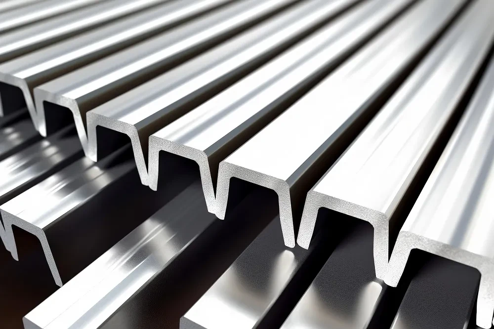
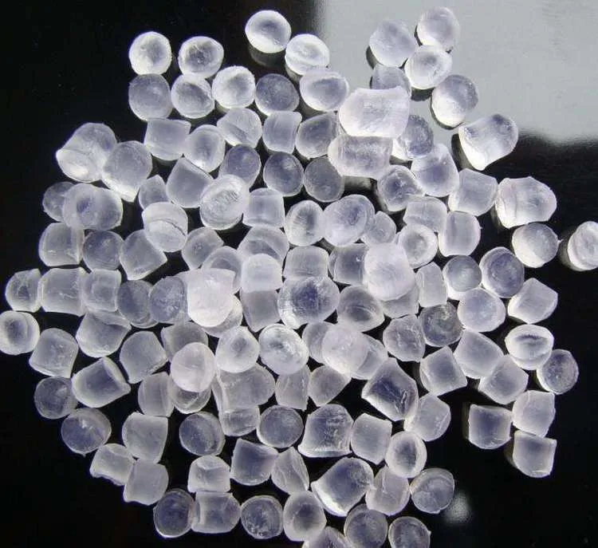
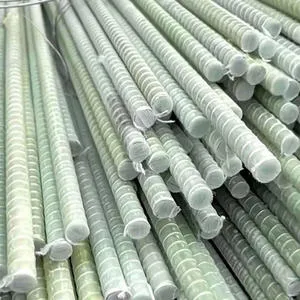
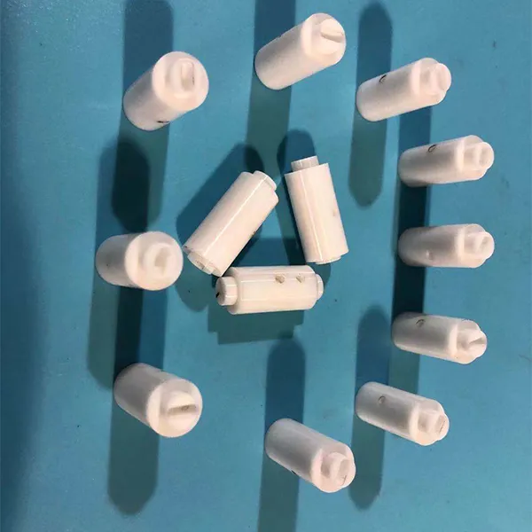
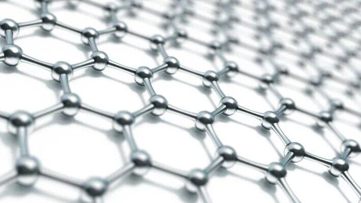
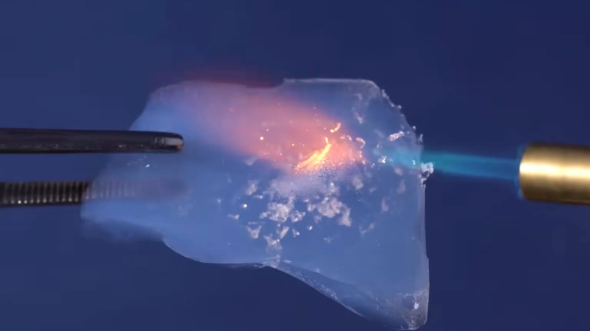
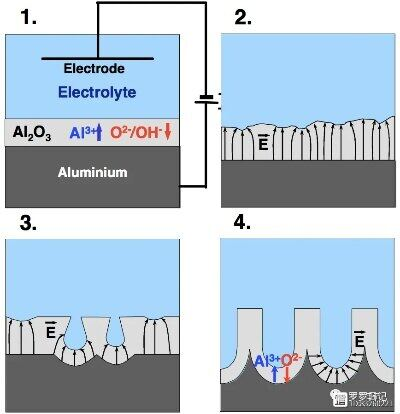

Week 6
材料介绍
🏠 一、日常生活中的常见材料
1. 金属材料：铝合金（以6063铝合金为例）
日常应用：广泛用于家中的门窗框架、阳台推拉门以及智能手机的金属中框。
特性：质轻（密度约为钢的1/3）、强度较高、导电导热性好，且在大气环境下具有不错的耐腐蚀性。

图：6063铝合金材料示例
2. 塑料材料：聚丙烯（PP）
日常应用：最常见的用途是微波炉专用饭盒、保鲜盒以及部分饮水机的水桶盖。
特性：无毒无味、密度小，具有极好的耐化学性和耐高温性（热变形温度约100-120℃），是唯一可以放进微波炉加热的常见塑料材质。

图：聚丙烯（PP）塑料材料示例
3. 复合材料：玻璃纤维增强塑料（GFRP，俗称"玻璃钢"）
日常应用：常见于户外公园的垃圾桶、景观雕塑，以及一些简易的玻璃钢瓦楞板（雨棚）。
特性：由玻璃纤维（增强体）和合成树脂（基体）复合而成，既保留了塑料的耐腐蚀性，又大幅提高了强度和刚性，且重量比钢材轻很多。

图：玻璃纤维增强塑料（GFRP）材料示例
4. 陶瓷材料：氧化铝陶瓷（Al₂O₃）
日常应用：家中的陶瓷水龙头阀芯、高档耐磨地砖，以及厨用陶瓷刀。
特性：硬度极高（仅次于金刚石）、耐磨损、化学性质极其稳定（耐酸碱腐蚀），且具有优异的电绝缘性和耐高温性（可耐受1000℃以上）。但缺点是脆性大，受到撞击时容易崩口或碎裂。

图：氧化铝陶瓷（Al₂O）材料示例
二、2种新型材料（前沿科技材料）
1. 石墨烯
简介：一种由碳原子以蜂窝状结构排列而成的二维纳米材料，厚度仅为一个原子层。
突破性性能：目前已知强度最高的材料（比钢强200倍），同时拥有极佳的导电性和导热性，且几乎是完全透明的。
潜在应用：未来可用于制造超薄柔性可折叠手机屏幕、超高容量电池（大幅缩短充电时间）以及海水淡化过滤膜。

图：石墨烯材料结构示意图
2. 气凝胶（以二氧化硅气凝胶为例）
简介：被称为"凝固的烟"或"蓝烟"，是世界上密度最小的固体之一，内部拥有极高的孔隙率（可达99.8%）。
突破性性能：拥有极低的导热系数，隔热性能是传统玻璃棉的2-3倍，同时具有极强的疏水性和巨大的比表面积。
潜在应用：目前主要用于航天航空领域的隔热防护（如火星车），未来正逐步应用于建筑节能外墙涂料和高性能冬季防寒服装面料。

图：二氧化硅气凝胶材料示例
三、三种材料的后处理方法（金属、塑料、木材）
1. 金属（铝合金）的后处理方法：阳极氧化处理
工艺原理：将铝合金工件作为阳极，放入酸性电解液（如硫酸）中，通过电解作用，在铝合金表面人为生成一层厚且致密的氧化铝（Al₂O₃）薄膜。
主要目的：
- 提高硬度与耐磨性：生成的氧化膜硬度远高于原铝材，减少表面划伤。
- 增强耐腐蚀性：有效隔绝空气和水分，防止铝基体继续氧化。
- 赋予颜色与装饰性：氧化膜具有多孔性，可以轻易吸附染料，从而制成各种鲜艳颜色的手机外壳或建筑门窗（如土豪金、太空灰）。

图：阳极氧化处理工艺原理示意图
2. 塑料（聚丙烯PP）的后处理方法：退火热处理（去应力退火）
工艺原理：将注塑成型后的PP制件（如饭盒盖），置于低于其热变形温度（通常为80~100℃）的热风循环烘箱中，保温一定时间（约1-2小时），随后缓慢冷却至室温。
主要目的：
- 消除内应力：PP在注塑成型时，因冷却速度不均会产生分子取向内应力，退火能使分子链松弛，有效防止制件在使用中发生翘曲变形或应力开裂。
- 稳定尺寸精度：使结晶度更加均匀，提高产品后续装配尺寸的稳定性。
3. 木材的后处理方法：表面涂饰（封闭底漆+打磨）
工艺原理：在实木家具或木制品表面，先涂刷一层稀释过的封闭底漆（或木蜡油），渗透进木材导管（毛孔）中，待干透后再用细砂纸（如400目以上）进行精细打磨，去除表面毛刺，最后再涂刷面漆。
主要目的：
- 封闭毛孔与防潮：堵塞木材内部的微孔，有效隔绝外界水汽，防止木制品因吸湿而发霉、膨胀变形。
- 提升光滑度与手感：通过"打底-打磨"的循环，将木材表面的木筋和毛刺彻底磨平，为后续面漆提供平整的基底，使家具表面呈现温润的镜面光泽。
- 增强附着力：底漆能够牢牢抓住木材纤维，防止后续面漆因木材热胀冷缩而剥落。